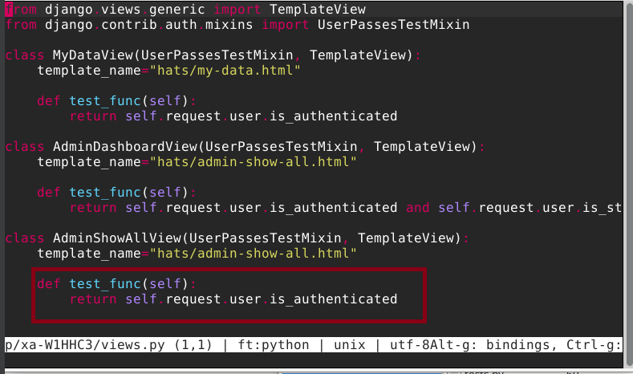
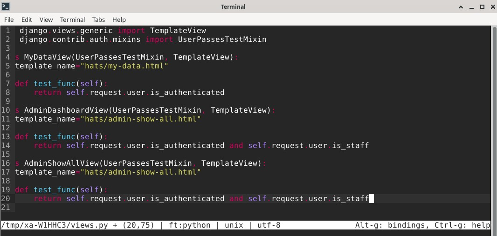

x
a.Broken access control = Käyttäjä pääsee ohjelmassa esiintyneen vian/heikkouden kautta käsiksi tietoihin jotka eivät ole tarkoitettu hänen nähtävikseen.
b.Fuff = työkalu, jonka avulla käyttäjä voi etsiä piilotettuja hakemistoja. Teksitssä viitattiin myös "fuzzaukseen".
Se on keino pommittaa nettisivua isolla määrällä dataa, joka aiheuttaa todennäköisesti sen kaatumisen.
c.Hyvään ja helppolukuiseen raporttiin on selkeästi merkattu tehtävän suoritusajat ja ympäristö.
Tämä tapahtuu seuraten huolellisesti annettuja raportointi ohjeita ja pitäen kiinni siististä kirjoitusasusta.
Testaus ympäristö:
Käytin testaus ja työskentely ympäristönä omaa Windows läppäriäni, johon olen asentanut Virtual Boxiin Debianin.
Debianin malli on 13.0, tutummin "Trixie". Trixien ympäristönä toimii "Xfce 4.20".
Koneella on käytössä 20.0 gb levytilaa.
Selaimena toimi Firefox.
a
Harjoituksessa avattiin web-lomake selaimessa, jossa kysyttiin PIN-koodia.
Lomake oli type="number", joten tekstiä ei voinut kirjoittaa.
Käytin selaimen Inspector-työkalua ja kirjoitin suoraan "number" arvon tilalle "text". Sillä tavalla en kuitenkaan päässyt kovin pitkälle, joten tutkin annettua vihjettä sql injektiosta.
Minulta meni melko pitkään kokeilla erilaisia yhdistelmiä, hyödyntäen Portswigger Academyn sekä Brightsecin lähteitä, sain aikaan lauseen "' UNION SELECT password FROM pins-- ".
Laitoin tämän lauseen "value" arvoksi. Aikaa vei paljon se, etten tajunnut heti käyttää kahta viivaa lopussa.
Lippu oli SUPERADMIN%rootALL-FLAG{Tero-e45f8764675e4463db969473b9b0fcdd}
b
Uskoisin, että vian voi korjata tekemällä koodista parametrisoidun.
Tarkoittaen että arvot eivät tulisi suoraan käyttäjältä, vaan ne olisivat määriteltynä parametreina.

c
Tämän tehtävän vastauksen löysin melko nopeasti, ikäänkuin vahingossa.
Back end -ohjelmointi kurssilla sivuttiin muutaman kerran url-kentän muokkaamista ja sitä, kuinka huonosti suojatut sivut ovat alttiita tällaisille hyökkäyksille.
Kokeilin ensin muuttaa url kenttää useammalla eri yhdistelmällä ja kirjautumatta. Se ei tuottanut tulosta, vaan pysähtyi aina kirjautumiseen.
Päätin kokeilla luoda käyttäjän ja muokata sitten url kenttää, ajatellen että siinä ehkä toimisi Broken access control-tyyppinen lähestyminen.
Kokeiltuani muutamaa, huomasin tällaisen mielenkiintoisen yksityiskohdan:

"admin-console" oli yksi niistä sivuista, joita django kokeili testaillessani eri url-osoitteita. Vaihdoin url:n sitten vain muotoon "127.0.0.1:8000/admin-console/.
Vastauksena sain sivun:

Kyseessä on vain se, ettei sivun luoja ole määritellyt tai lisännyt mitään tarkistusta siitä, että admin sivun katselijalla on admin oikeudet.
Toisin sanoen, broken access control.
c
Katseltuani lähdekoodia, löysin vian views.py:stä.
Kuten korostetusta osiosta näkyy, käyttäjän tarvitsi olla vain kirjautunut sisään.
Korjataan:
Näin kuka tahansa ei voi katsella admin oikeuksien takana olevia tietoja. Hyvin pieni virhe, sen löytämiseen koodista meni enemmän aikaa kuin korjaamiseen, mutta se mielestäni osoittaa hyvin kuinka pienikin virhe voi aiheuttaa isoja ongelmia.
Portswigger "SQL injections and UNION attacks, https://portswigger.net/web-security/sql-injection/union-attacks
Brightsec https://brightsec.com/blog/union-sql-injection/
Kurssin nettisivut: https://terokarvinen.com/sovellusten-hakkerointi/
Github lab artikkeli fuzz testauksesta: https://about.gitlab.com/topics/devsecops/what-is-fuzz-testing/